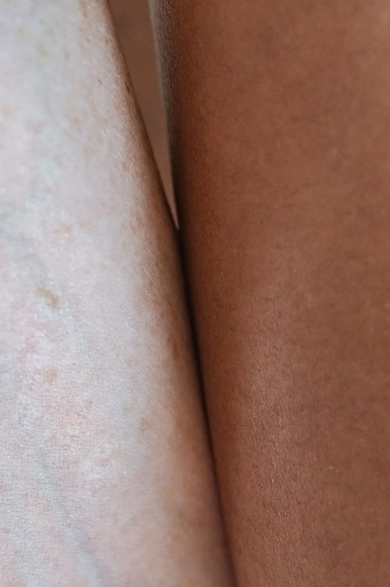

Yoga para la circulación si tienes várices o piernas pesadas
¿Vas a yoga o quieres empezar pilates y te preocupa que alguna postura te hinche más las piernas, o que las várices sean motivo para frenar? Casi siempre puedes seguir sin problema: lo que cambia es que conviene ajustar algunos detalles de la práctica.

En Medellín las clases de yoga y pilates no paran, de El Poblado a Laureles, y en varias llega alguien con várices o piernas que pesan al final del día con la misma pregunta: ¿esto me puede hacer daño? Yoga para la circulación no es una fórmula mágica, pero tampoco algo que debas evitar por tener várices: el movimiento de bajo impacto, en general, le hace bien a las piernas con insuficiencia venosa. Lo que cambia es el matiz de cada postura, no la actividad completa.
¿Qué dice la evidencia sobre el yoga para la circulación?
La evidencia más sólida sobre ejercicio y enfermedad venosa no viene de estudios de yoga, sino de programas de ejercicio estructurado y de actividades como caminar. Ahí sí hay ensayos que muestran que fortalecer la pantorrilla mejora cómo funciona la bomba muscular que empuja la sangre de vuelta hacia el corazón. Si quieres el panorama completo de qué otros movimientos ayudan además del yoga, puedes revisar nuestra guía de ejercicio para várices.
El yoga en sí se ha estudiado mucho menos. Existen algunos ensayos pequeños sobre yoga y várices, varios recientes, pero las revisiones sobre el tema coinciden en que todavía faltan estudios grandes y bien diseñados para afirmar que el yoga trata o revierte la enfermedad venosa. El posible beneficio de algunas posturas invertidas se explica, en teoría, por usar la gravedad a favor del retorno de la sangre hacia el corazón. Es una idea razonable, pero sigue siendo más teoría que algo demostrado en ensayos clínicos.
No existe evidencia de que ninguna postura de yoga haga desaparecer una várice ya formada. Lo que sí parece ayudar, igual que con cualquier otro ejercicio de bajo impacto, es moverte con regularidad.
Lo que sí puede pasar, y esto lo vemos con más certeza, es que una práctica constante de yoga o pilates te ayude a moverte más en el día a día, a estirar bien la pantorrilla y el tobillo, y a sentir menos pesadez simplemente por pasar menos tiempo quieta.
Eso no es poco.
Posturas que piden más cuidado si tienes várices o piernas pesadas
No se trata de evitar el yoga, sino de ajustar algunos detalles:
- Posturas sentadas largas con las piernas cruzadas o dobladas bajo el cuerpo, como el loto o la postura del héroe sostenida varios minutos, porque el músculo de la pantorrilla deja de trabajar y la sangre puede estancarse más de lo habitual en la parte baja de la pierna.
- Inversiones sostenidas, como la vela o la parada de cabeza, sin indicación ni acompañamiento: no hay evidencia de que curen nada y, además, no son para cualquier persona (presión alta no controlada, problemas de cuello, glaucoma, embarazo avanzado), así que coméntalo con el instructor o con tu médico antes de sostenerlas mucho tiempo.
- Secuencias muy dinámicas con saltos repetidos, en estilos como el power yoga, si tus várices ya te dan síntomas claros.
Sobre el yoga caliente y la circulación
Un estudio que comparó 12 semanas de yoga caliente con yoga a temperatura ambiente no encontró diferencias relevantes en la función de los vasos sanguíneos entre los dos grupos: lo que se asoció con el beneficio fueron las posturas, no el calor en sí mismo. Ese estudio midió arterias, no venas, así que no responde del todo la pregunta sobre várices. Pero sí ayuda a bajarle el peso al mito de que "sudar más" equivale a "circular mejor". Lo que sí sabemos del comportamiento general de las venas es que el calor prolongado tiende a dilatar las venas superficiales, así que si tus várices ya te molestan, moderar el tiempo en salas muy calientes es una precaución razonable, no una prohibición.
Medias de compresión durante la práctica
Si tus várices te dan síntomas, usar medias de compresión durante la clase es una opción razonable, igual que lo sería para salir a caminar. La evidencia en personas con enfermedad venosa muestra mejor retorno de la sangre al caminar con compresión graduada; en personas sanas, sin insuficiencia venosa, los estudios son más mixtos y no siempre muestran una diferencia clara.
En la práctica esto se traduce en algo simple: si notas que las piernas te quedan más pesadas después de clase, usar medias de compresión hasta la rodilla en tu próxima sesión es un experimento de bajo riesgo. Avísale a tu instructor que tienes várices, sobre todo si la clase incluye muchas posturas invertidas o de piso.
La mayoría ajusta la secuencia sin problema.
Después de clase, un automasaje para piernas pesadas de pocos minutos ayuda a bajar esa sensación, y se suma bien a otros hábitos para mejorar la circulación que ya tengas incorporados.
¿Y el pilates?
No encontramos estudios que evalúen el pilates específicamente en personas con várices. Por extensión de lo que sí se sabe del ejercicio de bajo impacto, es razonable esperar un efecto parecido al de otras actividades suaves: activa la musculatura de la pantorrilla y el tobillo sin el impacto repetido de correr o saltar. En Seravena no vemos motivo para que alguien con várices o piernas pesadas evite el pilates. Preferimos pensarlo como una opción más dentro del ejercicio de bajo impacto, con el mismo cuidado de no quedarte mucho rato inmóvil en una sola postura, sea en el mat o en el reformer.
Cuándo consultar antes de empezar
Antes de arrancar una rutina nueva de yoga o pilates, pide una valoración si:
- Tus várices son nuevas o cambiaron de tamaño o color en poco tiempo.
- Ya tuviste una trombosis o algún problema de coagulación.
- Estás embarazada y nunca has practicado yoga o pilates antes.
- Sientes dolor, no solo pesadez, de forma persistente en una pierna.
Si vas a tu próxima clase, un primer paso simple y gratuito es fijarte en cuánto tiempo pasas sentada quieta con las piernas dobladas, y moverte un poco entre postura y postura.
Si tienes várices o piernas pesadas y quieres saber qué tanto puedes exigirles en yoga o pilates, una valoración de salud vascular te da un panorama real de tus venas, no una suposición. Puedes agendar una valoración con nuestro equipo en El Poblado, en Medellín, antes de subirle la intensidad a tus clases.
Preguntas frecuentes
¿Puedo hacer yoga si tengo várices o piernas pesadas?
Sí, en la mayoría de los casos puedes. El yoga no cura las várices, pero el movimiento de bajo impacto suele ayudarte a sentir las piernas menos pesadas. Si tus várices te dan síntomas importantes o tienes antecedentes de trombosis, conviene que te valoren antes de empezar.
¿Qué posturas de yoga debo evitar si tengo várices?
No hay una lista fija de posturas prohibidas, pero conviene ajustar las que te mantienen mucho tiempo sentada con las piernas cruzadas o dobladas sin moverte, las inversiones sostenidas sin acompañamiento y las clases con calor muy intenso si tus várices ya te molestan ese día.
¿Sirve el pilates para las várices o la mala circulación?
No hay estudios específicos de pilates en personas con várices, pero por ser un ejercicio de bajo impacto es razonable esperar un efecto similar al de otras actividades suaves: activa la pantorrilla y el tobillo sin el impacto de correr o saltar. No reemplaza una valoración vascular si ya tienes síntomas.